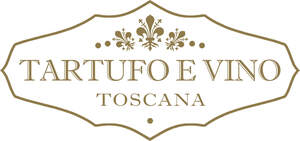

Trade Mark Journal No.2026/003 16 January 2026
UK00004292143 10 November 2025 (35,43)

- Class 35
- Business management of restaurants; Retail services relating to food; Sales promotions at point of purchase or sale, for others; Business management of resort hotels; Hotel management service [for others]; Business management of hotels; Hotels (Business management of -); Business management of entertainment venues; Business management assistance in the establishment and operation of restaurants; Business management assistance in the operation of restaurants; Business management of hotels for others; Retail services in relation to food cooking equipment; Business management consultancy in the field of corporate travel; Business management assistance in the field of franchising; Business management of entertainers; Business management of visitor attractions; Business advice relating to restaurant franchising; Marketing services in the field of restaurants; Retail services in relation to furnishings; Franchising services providing business assistance; Hotel management for others; Retail services in relation to food preparation implements; Business expertise services; Retail services relating to home textiles; Business management of sporting facilities [for others].
- Class 43
- Hospitality services [accommodation]; Hospitality services [food and drink]; Catering services for hospitality suites; Corporate hospitality (provision of food and drink); Providing food and drink catering services for exhibition facilities; Food and drink catering for banquets; Providing food and drink catering services for fair and exhibition facilities; Catering services for the provision of food and drink; Food and drink catering for institutions; Providing food and drink for guests; Catering of food and drinks; Food and drink catering; Hotel restaurant services; Business catering services; Serving food and drink for guests; Food and drink preparation services; Providing food and beverages; Provision of food and drink in restaurants; Club services for the provision of food and drink; Accommodation services; Reservation services for accommodation; Food preparation services; Catering services; Take-away food and drink services; Provision of food and beverages; Banqueting services; Providing temporary accommodation as part of hospitality packages; Providing food and drink catering services for convention facilities; Consultancy services in the field of food and drink catering; Hotel catering services; Providing food and drink for guests in restaurants; Catering services for providing European-style cuisine; Catering for the provision of food and beverages; Charitable services, namely providing food and drink catering; Resort lodging services; Hotel accommodation services; Catering for the provision of food and drink; Catering of food and drink; Catering (Food and drink -); Serving food and drink for guests in restaurants; Providing hotel accommodation; Catering services for the provision of food; Providing temporary lodging for guests; Hotel accommodation reservation services; Providing accommodation in hotels and motels; Providing travel lodging information services and travel lodging booking agency services for travelers; Services for providing food and drink; Provision of hotel accommodation; Restaurant services provided by hotels; Resort hotel services; Services for the preparation of food and drink; Providing hotel and motel services; Tourist camp services [accommodation]; Hotel services; Holiday accommodation services; Consulting services in the field of culinary arts; Providing restaurant services; Travel agency services for reserving hotel accommodation; Restaurant services; Restaurant services for the provision of fast food; Catering services for nursing homes; Office catering services for the provision of coffee; Consultancy services relating to hotel facilities; Arranging of hotel accommodation; Arranging hotel accommodation; Catering services for educational establishments; Booking agency services for hotel accommodation; Agency services for booking hotel accommodation; Restaurant reservation services; Booking services for holiday accommodation; Providing guesthouse services; Accommodation reservation services; Services for providing food; Services for the provision of food and drink; Reservation of hotel accommodation; Hotel reservation services; Holiday planning services [accommodation]; Catering; Reservation and booking services for restaurants and meals; Catering services for hospitals; Providing food and drink in bistros; Self-service restaurant services; Providing room reservation and hotel reservation services; Booking of hotel accommodation; Catering services for company cafeterias; Reservation of tourist accommodation; Reception services for temporary accommodation [management of arrivals and departures]; Tourist agency services for booking accommodation; Preparation of food and beverages; Providing exhibition facilities in hotels; Services for reserving holiday accommodation.
Tuscany And Taste Ltd